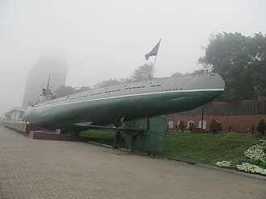
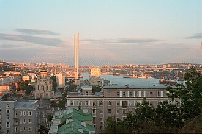
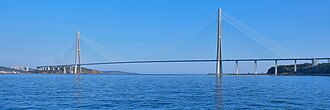
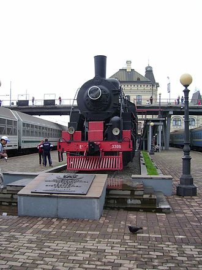
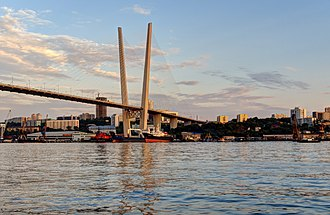

Исторические и справочные гербы


Vladivostok
Путеводитель. Объектов в этом выпуске: 31.
OTIUM — практика нарочитого досуга. В античном смысле otium — не побег от работы, а время, когда внимание возвращается к памяти, пейзажу и мысли — без прикладного дедлайна.
Мы выстраиваем маршруты для неспешного присутствия, а не для чек-листа достопримечательностей: важно быть в месте, а не «потреблять» виды.
OTIUM — не туроператор. Это приглашение пройтись, остановиться и оставить маршрут незавершённым, если свет на фасаде заслуживает ещё минуты.
Исторические и справочные гербы
Путеводитель. Объектов в этом выпуске: 31.
Владивосток — крупнейший город Приморья и конечная станция Транссибирской магистрали на Тихом океане.
Основан как военно-морская база Российской империи, развивался как порт и форпост на Дальнем Востоке. Мосты через бухту Золотой Рог, корабли Тихоокеанского флота и холмистый рельеф задают облик города.
Советский период укрепил военно-морскую роль; закрытость города сменилась открытостью после 1991 года. Транссиб, торговля с Азией и мосты через бухту формируют облик форпоста России на Тихом океане.













